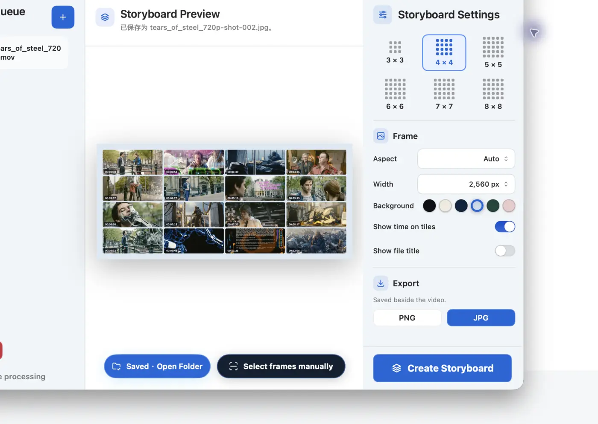
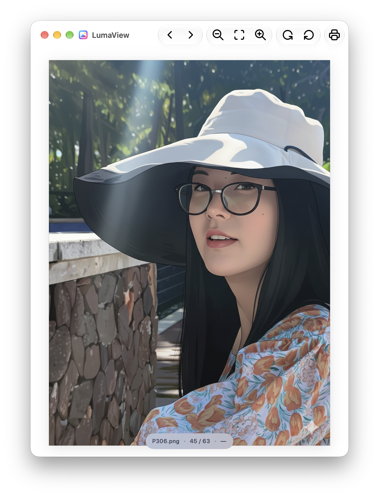
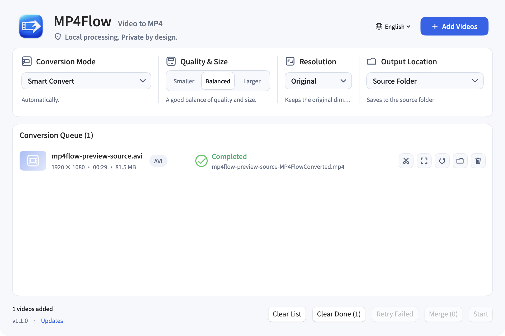

macOS · Swift
ShotMap
Turn video into a clear storyboard — with smart frame selection and local PNG/JPG export.
- Smart selection
- Manual refine
- Local export
iXiehao / Independent developer
Three focused Swift apps for video and images — fast, local, and private.
03 native apps · macOS 13+ · Universal
Native macOS apps
Each app is native, local-first, and made to get a specific job done without getting in your way.

macOS · Swift
Turn video into a clear storyboard — with smart frame selection and local PNG/JPG export.

macOS · Swift
A fast, minimal native image viewer for browsing folders, zooming, rotating, and printing.

macOS · Swift
Convert, trim, crop, rotate, and merge video into MP4 — locally on your Mac.
Open data
Two open reference datasets for people and models working across global markets.
Reference dataset
Multilingual automotive names, ready for people and AI.
3,030 models · 164 brands
EN · 简体中文 · 繁體中文 · 日本語
Reference dataset
A global motorcycle-name reference with real market context.
1,585 models · 90 brands
EN · 简体中文 · 繁體中文 · 日本語
Work in public
Source, releases, and the next focused utility all start on GitHub.
Visit github.com/ixiehao